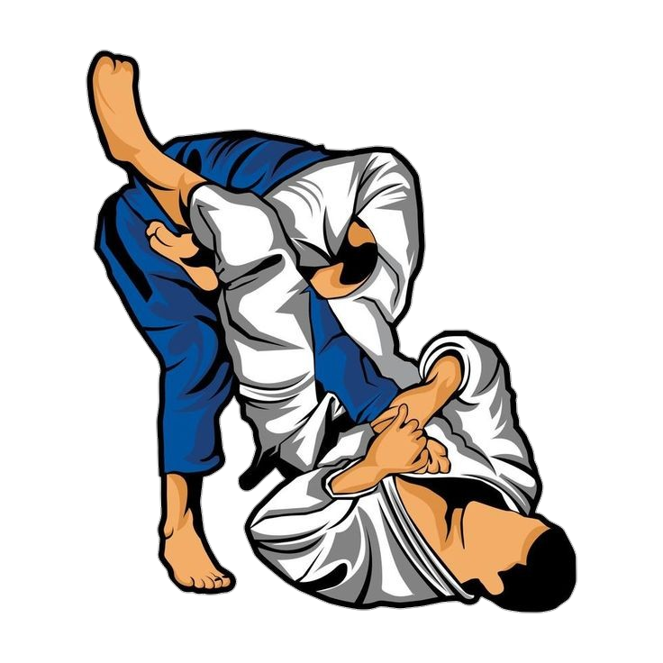

Beim Judo gibt es keine Tore und keine Punkte, sondern Wertungen. Bei jeder Aktion, die ein Kämpfer ausführt, beurteilt der Kampfrichter, wie gut sie war. Erfüllt sie bestimmte Kriterien, erhält der Judoka eine entsprechende Wertung.
Yuko → Kleinste Wertung
Waza-Ari → Mittlere Wertung (2x Waza-Ari = Ippon)
Ippon → Höchste Wertung (sofortiger Sieg)
Regeln:
Mehrfachvergabe möglich (außer bei Ippon – Ende des Kampfes)
Anzeige auf der Kampfrichtertafel:
Links: Weißer Judoka (kein Rot)
Rechts: Roter Judoka
Merke:
Ippon beendet den Kampf sofort.
Yuko/Waza-Ari werden addiert
(z. B. 2 Waza-Ari > 1 Waza-Ari + 3 Yuko).

Wer die höchste Wertung Ippon erhält, ist sofort Sieger (es ist egal, was für Wertungen der Gegner erzielt hat) und der Kampf ist zu Ende. Diese Wertung kann also nur einmal pro Kampf vergeben werden und deshalb braucht sie auch nicht auf der Tafel angezeigt werden. Zweimal Waza-Ari ist soviel wert wie Ippon, auch dann ist man sofort Sieger. Wenn mit diesen Wertungen der Kampf nicht vorzeitig beendet wurde, sondern die Kampfzeit regulär abgelaufen ist, gewinnt derjenige Judoka, der die höhere Wertung von beiden erzielt hat. Dabei gilt : Ein Waza-Ari ist mehr wert als alle Yukos des Gegners. Es entscheidet also immer die Anzahl der höchsten Wertung, die vergeben wurde. Ist diese bei beiden Kämpfern gleich, entscheidet die Anzahl der nächst niedrigeren Wertung, usw. Wenn beide Kämpfer überhaupt keine Wertung erzielt haben oder die Wertungen bei beiden absolut identisch sind, dann wird der Wettkampf durch „Golden Score“ entschieden, d. h. alle bisherigen Wertungen werden zurückgenommen und derjenige Kämpfer gewinnt, der in der Verlängerungszeit die erste Wertung erhält. Haben beide Kämpfer auch im „Golden Score“ keine Wertung erzielt, kommt es zu einem Kampfrichterentscheid. Der oder die Kampfrichter müssen einen Kämpfer zum Sieger erklären.

Beim Kampf im Stand gilt: Je mehr der Gegner auf den Rücken geworfen wird, und je schwung- und kraftvoller die Wurfausführung ist, desto höher die Wertung. Landet der Gegner dagegen auf dem Bauch, gibt es keine Wertung. Im Bodenkampf gilt: je länger man es schafft, den Gegner in einem Haltegriff festzuhalten, desto höher die Wertung. Ein Haltegriff zählt aber nur dann, wenn der Partner mit mindestens einer Schulter auf dem Boden liegt. Bei höheren Altersstufen kommen Hebel und Würgegriffe dazu. Bei wirkungsvoll angesetzten Hebeln oder Würgegriffen signalisiert der Unterlegene durch Abklopfen seine Aufgabe. Dann erhält der andere Ippon und der Kampf ist zu Ende.